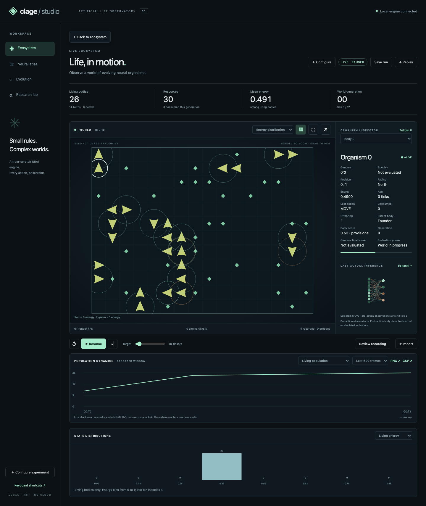

Clage
A from-scratch NEAT engine evolving neural agents in a 2D ecosystem where organisms move, eat, and reproduce. I built Clage Studio 1.0, a browser workbench with live visualization, neural-network inspection, evolutionary lineage, reproducible experiments, and deterministic replay.
Plus 4 JavaScript tests and 21 Playwright workflows; Ruff and mypy pass in CI.
OR and AND also 5/5; sine 0/5. Minimal initialization, unchanged benchmark budget.
Completed local browser workbench, with inspection, experiments, and replay.
Clage Studio demo
Walkthrough of Clage Studio’s live ecosystem and organism inspector, including actual network inputs and activations, with instrumental house music and no narration. Music: “Soft Circuit” — original instrumental, 122 BPM.
Current release validation
The reconciled 0.4.1 engine was validated with the unchanged budget: 100 founders, seeds 0–4, 300 generations, and minimal initialization (minimal-v1).
| Problem | Solved | Generations to solve, seed order |
|---|---|---|
| OR | 5/5 | 9, 6, 5, 6, 8 |
| AND | 5/5 | 6, 8, 7, 8, 17 |
| XOR | 5/5 | 212, 125, 68, 143, 102 |
| sine | 0/5 | not solved in 300 (mean best training fitness 0.9195) |
These results validate the engine on the specified tasks and seeds. Studio's ecosystem defaults to dense-random initialization (dense-random-v1), so these benchmarks do not measure its default ecosystem. The merge verification records the setup and outcomes.
Historical pre-Studio results
The following table and figures retain the pre-Studio measurements from 2105fee. The engine table used 5 seeds per problem and 300 generations per trial. Environmental experiments were not rerun during Studio development; their original configurations and measurement definitions remain separate from the current release.
| Problem | Solved (of 5) | Generations to solve (min / median / max) |
|---|---|---|
| OR | 5 | 7 / 13 / 13 |
| AND | 5 | 19 / 27 / 105 |
| XOR | 4 | 147 / 184.5 / 243 |
| sine | 0 | not solved in 300 (mean best fitness 0.91) |


These historical aggregates describe environmental differences; they do not establish a consistent separation across seeds or learned foraging. This is not a learning curve: each generation reseeds the world, and the shipped 25 generations do not establish generalizable learning.
Why build NEAT from scratch
NEAT evolves both the weights and the shape of a neural network. Libraries such as neat-python hide the parts I wanted to understand: how to cross over two networks with different shapes, how to protect new structure before its weights are tuned, and how to check that a decoded network is valid. So I wrote the engine myself, then used it for small controlled experiments.
What I built
- Engine: genomes, an innovation ledger that aligns matching genes during crossover, mutation, and speciation with the compatibility distance
δ = c1·E/N + c2·D/N + c3·ΔW. - Decoding: a genome becomes a feed-forward network through Kahn's topological sort with deterministic tie-breaking. Cycles are rejected at decode time.
- World: a walled 2D grid. Each organism sees 9 numbers and picks one of 4 actions (move, turn left, turn right, eat). Reproduction is a lifecycle rule based on energy, not a network output.
- Studio ecosystem: live Canvas visualization with zoom, pan, organism follow, layers, event pulses, statistics, charts, and distributions. Simulation ticks and rendering FPS are measured separately.
- Neural atlas: actual pre-action observations and activations, weights, biases, enabled genes, node and edge inspection, and side-by-side genome comparison.
- Evolution: evaluated generation summaries, champions, evolutionary parents and mutation deltas, plus a separate lineage for organisms born within the world.
- Laboratory: frozen validated settings, seeded held-out policy evaluation, and persistent local experiment artifacts. The independent engine tools also support one-factor environmental experiments with a control and 5 seeds each.
- Replay and export: bounded JSON/gzip archives with seeking, generation navigation, and a synchronized second replay; metrics CSV, chart/world PNG, and champion JSON exports. Configuration and seed support deterministic reruns.

Studio runs locally without a cloud account, API key, or frontend build. Its optional Python extra installs the API and streaming dependencies; the engine and terminal/matplotlib viewers work independently.
The hard part: measuring behavior correctly
In artificial-life work it is easy to see intelligence in noise. Three measurement problems mattered most:
- A “food alignment” metric looked like evidence of navigation, but it was confounded by food density: with more food nearby, random movement also points at food. I removed it from automatic charts and only compare it within one food condition.
- Transition entropy first counted action pairs across the boundary between two organisms. Now it counts only pairs within one organism's trace. Results from before the fix are marked as not comparable.
- The population is replaced by unevaluated offspring right after evaluation, so statistics are read from a per-generation record, never from the live population.
Key decision: explicit randomness
The engine's random generator comes from the seed. The world's generator is derived from the trial seed and the generation number. With the same configuration and source, the same seed gives identical results, and different trials are independent. Studio preserves validated run settings and distinguishes evolutionary ancestry from within-world births, so a replay or comparison has an explicit scientific context.
Evidence
- 429 Python tests pass in CI on Python 3.10 and 3.12, together with Ruff and mypy. A separate Chromium job passes 4 JavaScript tests and 21 Playwright workflows.
- The release review and merge verification document installation, deterministic reruns, browser workflows, and the current engine benchmarks.
- Historical figures remain viewable, but reproducing their measurements requires the original scientific source and configurations. The corrected engine does not rewrite their results.
Limitations
- Sine regression remains unsolved within 300 generations across all 5 documented seeds. The engine benchmarks do not establish generalizable learning, learned foraging, cooperation, or intelligence.
- Studio supports one active run and bounded recording: at most 600 frames or 16 MiB of encoded JSON. Deterministic reruns are not resumable checkpoints.
- In the historical environmental experiments, evolved networks stayed small, and almost no organism survived all 300 ticks of a generation. Those experiments were not rerun for Studio's dense-random initialization.
- Organisms observe local body density but have no directional sensor for other organisms; no metric claims cooperation, competition, or avoidance.
The README has Studio setup, the current validation budget, historical experiments, and links to the release reviews and measurement notes.
Read the Clage README